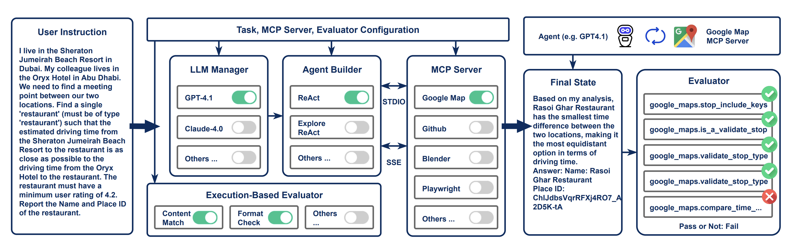

AI Agent Benchmarking Framework for Enterprise Operations
A comprehensive framework for evaluating AI agents on complex Salesforce enterprise tasks using the Model Context Protocol (MCP)
Compare how different AI agents solve complex Salesforce enterprise tasks
The MCP-Universe architecture consists of several interconnected components specifically designed for Agent development, evaluation, and improvement:
Three specialized agent types optimized for different reasoning approaches: ReAct (Standard), ReAct with Tool Summarization, and Cursor Agent.
Supports Salesforce MCP servers and tools such as Falcon Metadata, PagerDuty, GUS, Splunk, Argus, and Trace Analyzer for comprehensive system interaction.
Complex, multi-step scenarios involving service dependency analysis, disaster recovery validation, incident management, and compliance checking.
Customized validation functions that assess mission-critical service identification, runbook compliance, and enterprise data accuracy.
Manages complex enterprise workflows, coordinates multi-server interactions, and collects detailed performance metrics across all scenarios.
Logging system capturing agent reasoning traces, API interactions, and decision-making processes for analysis.
MCP-Universe supports flexible agent framework designs and improvements, e.g.:
Advanced AI coding assistant that combines natural language understanding with direct system interaction. Fully blackbox agent, cannot customized for specific tasks.
Simple and effective agent that think before acting. It uses LLM calls for tool use and reasoning, with visible trajectories for debugging. Controllable framework, but cannot control context length from tool output.
Enhanced ReAct agent that uses code writing to parse lengthy or problematic tool call results for more to-the-point tool feedback. Controllable framework and clean tool output.
Here's an example of the complex, multi-step tasks that MCP-Universe evaluates:
This task requires the agent to: (1) List services with 'sdb' keyword, (2) Check mission-critical status, (3) Analyze disaster recovery runbooks, (4) Validate utility pipeline FIT compliance, and (5) Generate a structured report.
MCP-Universe employs a sophisticated evaluation system specifically designed for Salesforce enterprise scenarios:
The framework integrates with multiple enterprise-grade MCP servers to provide comprehensive evaluation capabilities:
Enterprise service management and metadata operations
Comprehensive enterprise service management, Falcon Instance operations, functional domain queries, and metadata analysis for complex service architectures.
Incident management and team operations
Complete incident management lifecycle including team operations, escalation policies, on-call scheduling, service monitoring, and alert management.
Log analysis and monitoring
Advanced log analysis capabilities including trace ID extraction, error pattern detection, performance monitoring, and complex query execution across enterprise log data.
Metrics and performance monitoring
Comprehensive metrics querying, performance monitoring, real-time system health analysis, and automated alerting for enterprise-scale monitoring.
Issue tracking and investigation management
Enterprise issue tracking, investigation management, product tag operations, case management, and workitem analysis across complex enterprise systems.
Distributed tracing and performance analysis
Advanced distributed tracing analysis, SQL/SOQL query optimization, LLM call profiling, and comprehensive performance bottleneck identification.
Time format conversion and temporal operations
Comprehensive time format conversion, epoch handling, temporal query support, and timezone management for enterprise time-based operations.
Unified service operations and integration
Unified service operations, activity tracking, cross-system integration, and centralized management of enterprise service interactions.
Analysis of complex service dependency chains, start dependencies, and authorized client relationships.
Identification and validation of mission-critical services, disaster recovery runbooks, and FIT compliance.
Splunk log analysis, trace ID extraction, error pattern detection, and performance query analysis.
Product tag management, investigation tracking, and workitem analysis across enterprise systems.
Team management, incident tracking, escalation policy analysis, and connection pool monitoring.
Runbook validation, pipeline compliance checking, and enterprise policy adherence verification.
MCP-Universe uses a flexible, rule-based evaluation system that can be customized for any task. Evaluators are defined using a simple JSON structure that specifies how to extract values from agent responses and what criteria to validate against.
Here's how an evaluator is defined for validating mission-critical services:
How it works:
Custom op Implementation:
json, get(key), len - Parse JSON responses and extract specific fields or calculate lengths.
=, <, >, contains - Standard comparison operations for validating extracted values.
salesforce.has_mission_critical_services, salesforce.services_have_required_fields - Domain-specific validation functions.
foreach, filter, map - Advanced operations for complex data structures and nested validations.
Ready to explore agent trajectories and compare different approaches on Salesforce enterprise tasks? Click the button above to access our interactive trajectory comparison tool.
Choose one or more agent types above to view and compare their trajectories for the selected Salesforce enterprise task.
You can compare up to 3 different agent approaches side by side to analyze their reasoning patterns, tool usage, and performance differences on complex enterprise scenarios.